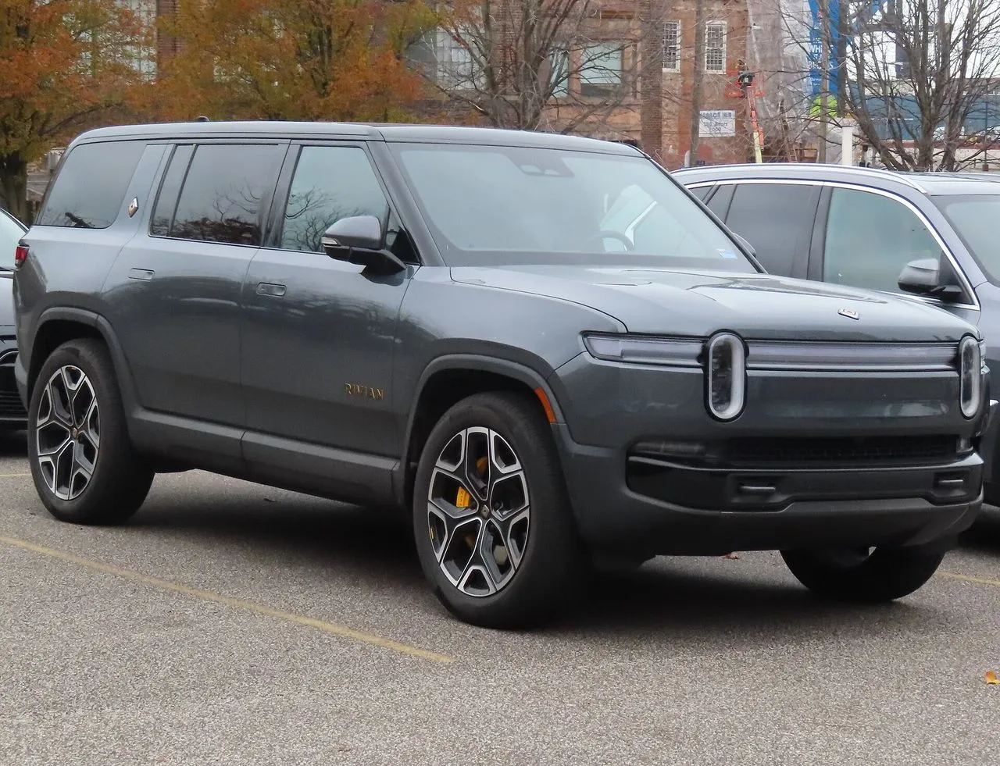
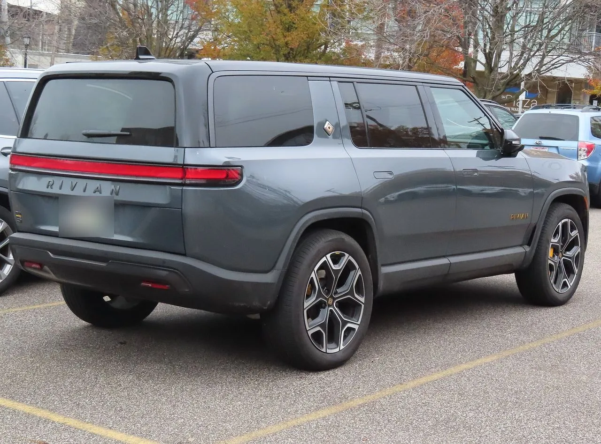
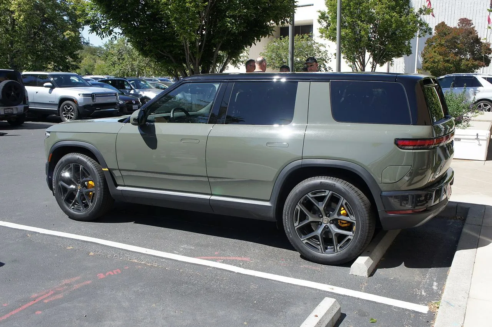
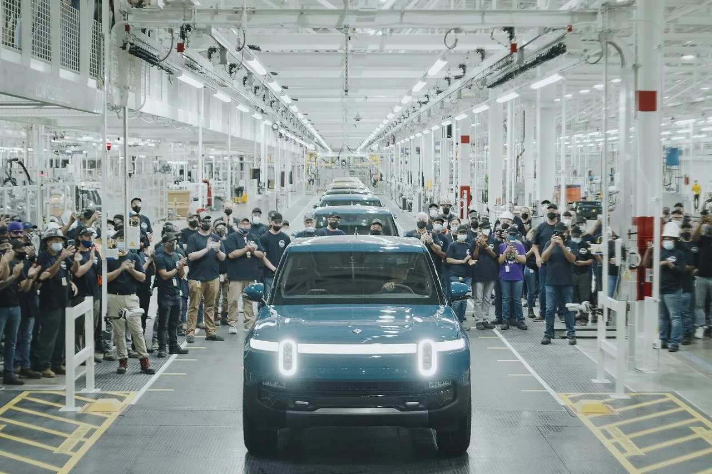
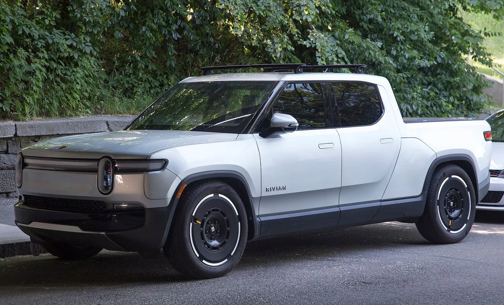
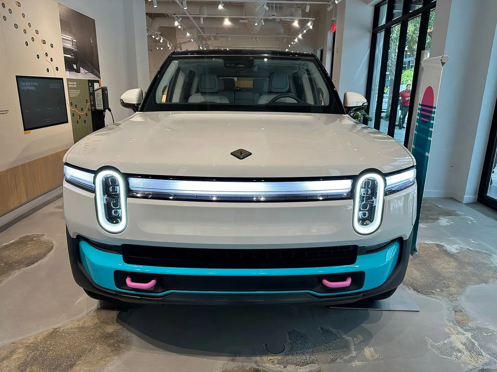

▲ Wikimedia Commons에 R2(런치 그린)로 등록된 사진. 2026년 5월 15일 미국 팰로앨토 리비안 스페이스 앞에서 촬영됐고, 이번 리콜 대상 개별 차량인지는 확인되지 않는다 ⓒ Lcaa9, Wikimedia Commons (CC BY-SA 4.0)
리비안이 9월 16일 미국 NHTSA에 후방카메라 리콜(R2 포함 9만 8,828대)을 접수한 지 13일 만인 9월 29일, 이번에는 2027년형 R2 14대의 고전압 배터리 볼트 체결 불량 리콜을 접수했다. 같은 차종이 한 달도 안 돼 두 번 리콜 명단에 오른 셈이다. 공교롭게도 10월 초 발표된 3분기 인도량은 1만 9,248대로, 전문 매체가 분기 기준 역대 최대로 보도했다. 두 사실을 NHTSA 보고서와 리비안 공시로 하나씩 대조해 정리했다. 제목의 "13일"은 NHTSA 접수일(9월 16일→29일)을 기준으로 센 것이고, "역대 최대"라는 표현은 리비안 보도자료가 아닌 전문 매체(드라이브테슬라캐나다)의 해석이다.
1. 전제부터 확인 — "한 달 새 두 번"은 정말인가
해외 매체 요약에는 "R2 기록적 분기 판매와 동시에 한 달 사이 두 번째 리콜"이라는 문장이 돌았다. 날짜와 수치를 NHTSA 리콜 데이터(Part 573 보고서)로 직접 확인한 결과, 리콜은 서로 다른 별개의 두 건이 맞고 접수일 간격은 13일이다. 반면 "기록"은 R2가 아니라 리비안 전체 분기 인도량을 가리킨다. 리비안은 모델별 인도량을 따로 공개하지 않는다.
| 항목 | 1차: 26V597 | 2차: 26V625 |
|---|---|---|
| NHTSA 접수일 | 2026년 9월 16일 | 2026년 9월 29일 |
| 리비안 리콜 번호 | FSAM-1866 | FSAM-1888 |
| 대상 | 2022~2026년형 R1T, 2022~2027년형 R1S, 2027년형 R2 | 2027년형 R2만 |
| 대수 | 9만 8,828대(R1S 6만 2,259 · R1T 3만 4,088 · R2 2,481) | 14대 |
| R2 생산 기간 | 2026년 4월 23일~8월 10일 | 2026년 5월 18일~8월 27일 |
| 결함 | 스태빌리티 컨트롤 해제 알림이 후진 시 카메라 영상을 가림(FMVSS 111 후방시야 기준 미충족 우려) | 고전압 배터리에 연결된 볼트가 규정 토크로 조여지지 않음 |
| 시정 | 무상 OTA 소프트웨어 업데이트(이미 배포, 접수 시점 95% 이상 적용) | 점검 후 연결부 수리 또는 손상 부품 교체(무상) |
| 오너 통보 예정 | 2026년 11월 9일 | 2026년 11월 28일 |
"13일"은 접수일 기준이다. 리비안이 리콜을 결정한 날로 세면 1차는 9월 10일(후방시야 기준 위반 가능성 배제 불가 판단), 2차는 9월 24일로 14일 간격이 된다. 어느 쪽이든 "한 달 안에 두 번"이라는 큰 틀은 같다.
두 건의 R2 대상 범위(생산 기간)는 서로 겹치지만, 14대가 2,481대 안에 포함되는지는 NHTSA 보고서만으로는 알 수 없다. 두 리콜은 결함 부위도 원인도 다르다. 하나는 화면 소프트웨어, 다른 하나는 조립 공정의 볼트 체결이다.
NHTSA 보고서 원문은 아래에서 확인할 수 있다. 2차 리콜 26V625 보고서 바로가기 1차 리콜 26V597 보고서 바로가기
▲ Wikimedia Commons에 R2(런치 그린)로 등록된 사진. 2026년 5월 15일 미국 팰로앨토 리비안 스페이스 앞에서 촬영됐고, 이번 리콜 대상 개별 차량인지는 확인되지 않는다 ⓒ Lcaa9, Wikimedia Commons (CC BY-SA 4.0)
2. 1차 리콜 — 후진할 때 카메라 대신 "스태빌리티 경고"가 뜬다
리비안 보고서에 따르면 결함은 아주 특정한 조작 순서에서만 나타난다. 스태빌리티 컨트롤을 끈 주행 모드에서 차를 잠시 떠났다가 돌아오면 중앙 화면에 "스태빌리티 컨트롤이 꺼져 있으니 켜진 모드로 돌아가겠느냐"는 안전 알림이 뜬다. 이때 선택 없이 기어를 후진에 넣으면, 차가 움직이기 전까지 이 알림이 후방카메라 영상을 가릴 수 있다. 차가 움직이거나 카메라 화면을 직접 누르면 영상이 나타난다.
📍 사고 보고는 없고, 이미 거의 해결됐다
리비안은 접수 시점에 이 문제와 관련된 고객 신고·사고·부상이 없다고 밝혔다. 내부 테스트에서 발견해 7월부터 9월까지 조사했고, 9월 10일 후방시야 기준(FMVSS 111) 위반 가능성을 배제할 수 없다고 판단했다. 시정용 OTA는 보고서 접수 시점에 이미 배포돼 대상 차량의 95% 이상(R2는 96%)에 적용된 상태였다.
| 날짜 | 내용 |
|---|---|
| 2026년 4월 23일 | R2의 해당 소프트웨어 탑재 생산 시작 |
| 2026년 7월~9월 | 내부 테스트에서 발견한 증상을 조사(발동 조건·대상 범위·FMVSS 111 영향) |
| 2026년 8월 10일 | 수정 소프트웨어 탑재 생산으로 전환(R2 기준 대상 생산 종료) |
| 2026년 9월 10일 | 후방시야 기준 위반 가능성을 배제할 수 없다고 판단 |
| 2026년 9월 16일 | NHTSA에 접수 |
| 2026년 11월 9일 | 오너 통보 우편 및 VIN 조회 예정일 |
대상 소프트웨어는 R1 계열 2026.23 이전 버전, R2는 2026.31.40 이전 버전이다. R2 2,481대는 양산 초기인 4월 23일부터 8월 10일까지 생산분이다. 이 리콜의 상세와 R1S·R1T 대상 수는 리비안 후방카메라 리콜 기사에서도 다뤘다.

▲ 리비안 R1S. 1차 리콜의 최대 대상 모델로 6만 2,259대가 포함됐다. 사진은 2025년형 R1S 애센드 트라이 맥스 ⓒ MercurySable99, Wikimedia Commons (CC BY-SA 4.0)

▲ 후진할 때 보는 후방카메라 영상이 이번 1차 리콜의 핵심이다. 사진은 2025년형 R1S 애센드 트라이 맥스의 뒷모습(번호판은 원본 파일에서 가려져 있음) ⓒ MercurySable99, Wikimedia Commons (CC BY-SA 4.0)
3. 2차 리콜 — 14대, 하지만 "경고 없이" 힘이 끊길 수 있다
2차 리콜은 대수가 적지만 위험의 성격은 더 직접적이다. NHTSA 접수 요약은 "고전압 배터리 볼트가 제대로 체결되지 않아 구동력 상실이 발생할 수 있다"고 적었고, 보고서는 사전 경고 없이 구동력을 잃을 수 있으며 이는 충돌 위험을 높인다고 설명했다. 해당 경고 표시도 없다고 기재돼 있다.
| 날짜 | 내용 |
|---|---|
| 2026년 5월 18일 | 해당 볼트가 규정 토크 미달로 체결됐을 가능성이 있는 생산 시작 |
| 2026년 8월 27일 | 같은 가능성이 있는 생산 종료 |
| 2026년 9월 17일 | 제조 작업자가 자동 체결 공정에서 토크 부족 볼트를 발견, 조사 시작 |
| 2026년 9월 24일 | 대상 14대 전체에 대해 자발적 리콜 결정 |
| 2026년 9월 29일 | NHTSA에 접수 |
| 2026년 11월 28일 | 오너 통보 우편 및 VIN 조회 예정일 |
해당 체결 공정은 이미 "토크 부족 볼트를 불량으로 걸러내도록" 재프로그래밍됐다고 보고서는 밝혔다. 대상 14대는 제조 기록으로 가려냈고, 같은 기간에 만든 나머지 R2는 정상 토크로 체결된 것으로 확인했다는 설명이다. 부품은 M6 규격 볼트(부품번호 SC00036202-D)다.
✅ 리비안의 사전 조치는 리콜보다 먼저였다
이 건은 NHTSA 접수 전부터 오너 커뮤니티(레딧 r/RivianR2)에서 알려졌고, 전문 매체 리비안트래커가 9월 26일 이를 보도했다. 서비스센터 직원이 일부 오너에게 전화로 즉시 운행 중지를 안내했고 차량은 견인돼 점검을 받았으며, 오너들은 렌터카와 우버 크레딧을 받았다고 한다. 리비안 측은 "현재 영향받는 R2는 14대뿐"이라는 취지의 답을 냈다고 리비안트래커가 9월 28일 갱신에서 전했다(영어 원문 "only 14 R2 vehicles are impacted"). 이 내용은 단일 전문 매체가 오너 증언과 짧은 답변을 옮긴 2차 출처이며, 리비안의 공식 보도자료·성명문은 확인하지 못했다. 이 매체는 조립 공정 문제를 말한 익명의 서비스 쪽 제보도 실었지만 검증되지 않은 내용이라 본문에서는 쓰지 않는다.

▲ 같은 R2 분류 사진의 측면. 두 리콜 모두 대상은 2027년형 R2 초기 생산분이다 ⓒ Lcaa9, Wikimedia Commons (CC BY-SA 4.0)
4. 처음이 아니다 — R2는 리콜 전에도 점검 이슈가 있었다
드라이브테슬라캐나다(8월 22일 보도)에 따르면 R2는 8월 19일 무렵 리비안 앱 메시지 등으로 일부 차량 오너에게 "점검 전까지 급속충전(DC 고속충전)을 피하라"는 안내를 보냈다. 문제 부위는 충전 커넥터와 헤더 접합부 사이 간격으로, 점검 결과에 따라 헤더·커넥터 어셈블리를 교체하는 조치였다. 대상 수는 공개되지 않았고, 이 조치는 NHTSA 정식 리콜로 접수되지 않았다. 이 건도 레딧 오너들이 공유한 안내문에 근거한 단일 매체 보도이고, 리비안의 공식 성명은 확인되지 않았다. 매체 역시 NHTSA 접수 흔적이 없다고 적었다. 앞선 두 건이 부위가 다르다는 점에서 이 점검은 별개로 봐야 한다.
| 시기 | 이슈 | 성격 |
|---|---|---|
| 6월 | R2 일반 고객 인도 시작 | 양산 개시 |
| 8월 19일경 | 일부 R2 급속충전 커넥터 점검 안내 | 서비스 캠페인(리콜 아님), 대수 비공개 |
| 9월 16일 | 후방카메라 소프트웨어 리콜 접수(R2 2,481대) | NHTSA 리콜, OTA 시정 |
| 9월 25~26일경 | 고전압 회로 볼트 점검, 일부 R2 운행 중지·견인(리비안트래커 9월 26일 보도, 28일 갱신에서 "14대") | 오너 증언 중심, 공식 성명 미확인 |
| 9월 29일 | 배터리 볼트 리콜 접수(R2 14대) | NHTSA 리콜, 현장 점검 필요 |
다만 이 흐름이 "R2의 구조적 결함"을 뜻한다고 단정하기는 어렵다. 리콜 두 건은 원인이 다르고, 신차 양산 초기 6개월 안에 소프트웨어 보정과 조립 공정 점검이 겹치는 것은 업계에서 드물지 않은 패턴이다. 확인된 사실은 두 리콜 모두 사고·부상 보고가 없다는 점과, 대수가 크게 다르다는 점이다.

▲ 리비안 일리노이주 노멀 공장 라인. 이 사진은 2021년 9월 R1T 양산 때의 모습으로 R2 생산 장면이 아니다 ⓒ Rivian, Wikimedia Commons (CC BY-SA 4.0)
5. 같은 주에 나온 숫자 — 3분기 1만 9,248대, 역대 최대로 보도
리비안은 10월 2일 3분기 생산·인도량을 발표했다. 보도자료는 생산 1만 9,751대, 인도 1만 9,248대이며 "리비안의 전망과 부합한다(in line with outlook)"고 밝혔다. 보도자료에는 "기록"이라는 표현도, R2 언급도, 전 분기·전년 동기 비교도 없다. "분기 역대 최대"는 드라이브테슬라캐나다가 과거 최고치(2023년 3분기 1만 5,564대)와 비교해 붙인 해석이다. 2026년 연간 인도 가이던스 6만 5,000~7만 대도 유지했다. 3분기 재무 실적은 10월 29일 장 마감 후 공개된다.
| 구분 | 인도량 | 비고 |
|---|---|---|
| 2026년 3분기 | 1만 9,248대 | 분기 역대 최대로 보도됨(드라이브테슬라캐나다), 2분기 대비 약 57.8% 증가, 생산 1만 9,751대(8-K) |
| 2026년 2분기 | 1만 2,194대 | 1분기 대비 약 17.6% 증가. 리비안 2분기 보도자료(SEC 8-K)에서도 확인 |
| 2026년 1분기 | 1만 365대 | 리비안 공시·검색 요약 기준 |
| 2025년 3분기 | 1만 3,201대 | 전년 동기 대비 약 45.8% 증가(드라이브테슬라캐나다 단독) |
| 2023년 3분기 | 1만 5,564대 | 기존 분기 최대 기록(드라이브테슬라캐나다 단독, 리비안 공식 자료로는 미확인) |
3분기는 R2 고객 인도가 6월에 시작된 뒤 처음 맞는 완전한 분기여서 R2가 증가분의 상당 부분을 설명한다는 해석이 나온다. 하지만 리비안은 모델별 인도량을 공개하지 않아 R2가 몇 대인지는 알 수 없다. 전문 매체는 올해 말까지 R2는 고가 트림인 퍼포먼스만 인도된다고 전했다. 연간 목표를 채우려면 4분기에 최소 2만 3,193대를 인도해야 한다. 1분기 1만 365대, 2분기 1만 2,194대, 3분기 1만 9,248대를 더한 9개월 누적 4만 1,807대에서 가이던스 하단 6만 5,000대를 뺀 값이다.

▲ 리비안 R1T. 리비안의 분기 인도량은 R1S·R1T·R2·상용 밴을 합친 수치다. 사진은 2025년형 R1T ⓒ Mr.choppers, Wikimedia Commons (CC BY-SA 4.0)
6. 리콜 대수와 인도량을 같이 보면
2차 리콜 14대는 3분기 인도 1만 9,248대의 0.07% 수준이다. 1차 리콜의 R2 2,481대는 4월 23일~8월 10일 생산분으로 이미 96%가 OTA를 마쳤다. 리콜 건수는 늘었지만 실제로 현장 수리가 필요한 R2는 현재까지 공개된 범위에서 14대다. 비율만 놓고 보면 인도 호조를 뒤흔들 규모는 아니다.
| 구분 | 대수 | 시정 방식 |
|---|---|---|
| 1차 R2 대상 | 2,481대 | OTA(96% 적용 완료) |
| 2차 R2 대상 | 14대 | 현장 점검·수리 |
| 리비안 3분기 총 인도 | 1만 9,248대 | R2 비중은 미공개 |
다만 신뢰 측면의 부담은 대수와 별개다. 막 첫 인도를 시작한 중형 SUV가 연달아 안전 이슈에 올랐고, 일부 오너는 견인과 대차를 겪었다. 리비안이 10월 29일 실적 발표에서 이 부분을 어떻게 설명할지가 다음 확인 포인트다.

▲ 리비안 쇼룸 전시 차량. 2025년 9월 마이애미 매장에서 촬영한 사진으로 R2가 아닌 R1 계열이다 ⓒ Phillip Pessar, Wikimedia Commons (CC BY 4.0)
7. 한국과는 어떤 관계인가
리비안은 국내에서 공식 판매를 시작하지 않았고, 국내 출시 일정도 확인되지 않았다. 앞서 보도된 것처럼 리비안 IP 홀딩스가 한국에 R2·R1 계열 상표 7건을 등록해 둔 사실만 알려졌으며, 출원 시점은 대부분 2020년이어서 진출 신호로 읽기 어렵다는 분석이 있다(상표 기사 참고). 따라서 이번 리콜의 국내 대상 차량은 없다. 한국 오너가 점검받을 일도 없다.
다만 R2는 포드·GM·스바루 등 미국 시장 경쟁 차종과 비교되는 모델인 만큼, 가격과 성능 비교는 리비안 R2 vs 스바루 트레일시커 비교 기사에서 볼 수 있다.
📍 미국 오너라면 이렇게 확인한다
NHTSA 사이트(nhtsa.gov/recalls)에 17자리 VIN을 입력하면 대상 여부를 알 수 있다. 1차(26V597)는 11월 9일, 2차(26V625)는 11월 28일부터 VIN 조회가 가능하다고 보고서에 적혀 있다. 리비안 고객센터 번호는 1-888-748-4261이다.
8. 아직 확인되지 않은 것
| 항목 | 상태 |
|---|---|
| R2 단독 3분기 인도량 | 리비안 미공개 |
| 14대와 2,481대의 중복 여부 | NHTSA 보고서에 명시 없음 |
| 급속충전 점검 대상 수 | 비공개, 리콜 접수 없음 |
| 리비안의 공식 성명문(운행 중지 관련) | 매체 인용만 확인 |
| "분기 역대 최대"의 공식 확인 | 리비안 보도자료에는 기록 표현 없음, 매체 해석 |
| 국내 출시 계획 | 미확인 |
9. 요약
리비안 R2는 2026년 9월 16일(후방카메라, R2 2,481대 포함 총 9만 8,828대)과 9월 29일(배터리 볼트, 14대) 두 차례 NHTSA 리콜에 올랐다. 접수일 간격은 13일이고, 결함도 원인도 별개다. 1차는 OTA로 사실상 해결됐고, 2차는 현장 점검이 필요하다.
같은 시기 발표된 3분기 인도 1만 9,248대는 전문 매체가 분기 기준 역대 최대로 보도했지만(리비안 보도자료에는 기록 표현 없음), 그 기록은 R2 단독이 아닌 리비안 전체 수치다. 연간 가이던스 6만 5,000~7만 대는 유지됐고, 10월 29일 실적 발표가 다음 확인 지점이다.
국내에서는 리비안이 공식 판매되지 않아 이번 리콜의 한국 대상 차량은 없다. 상표 등록만 확인된 상태이며 출시 일정은 확인되지 않았다.